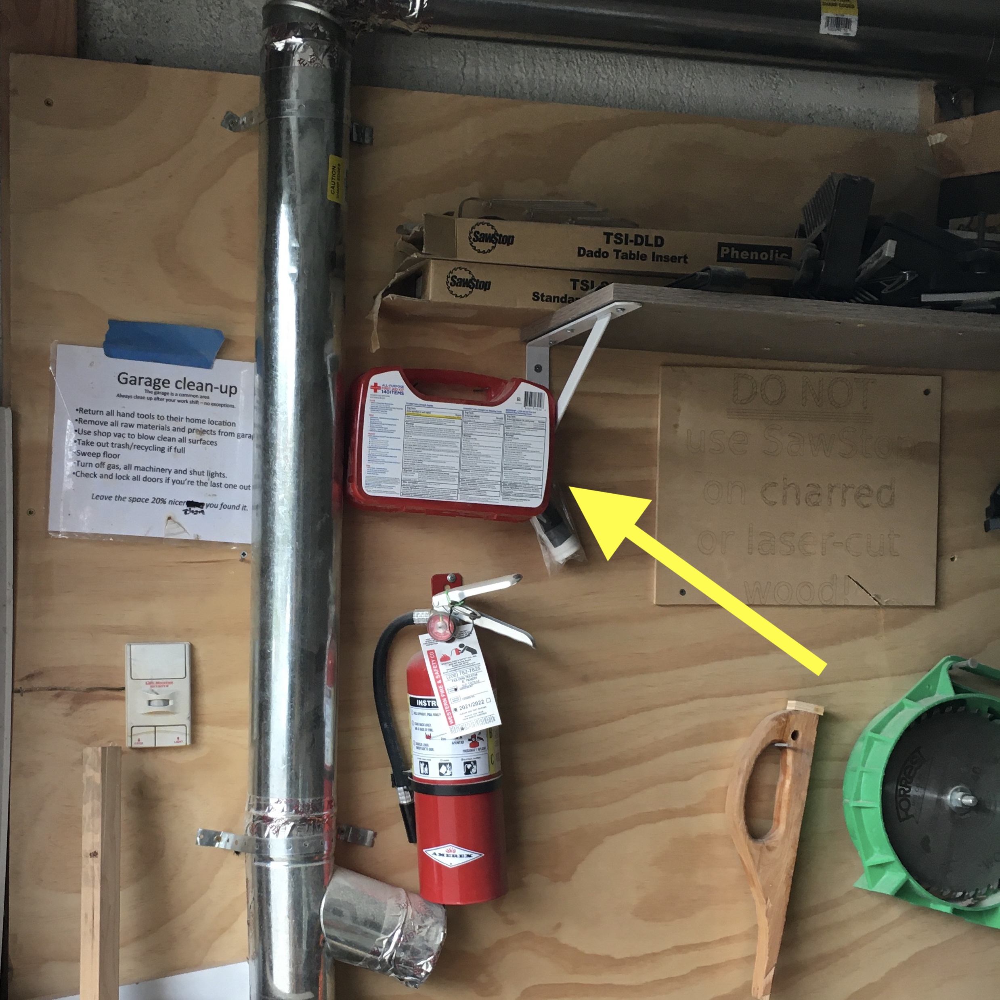
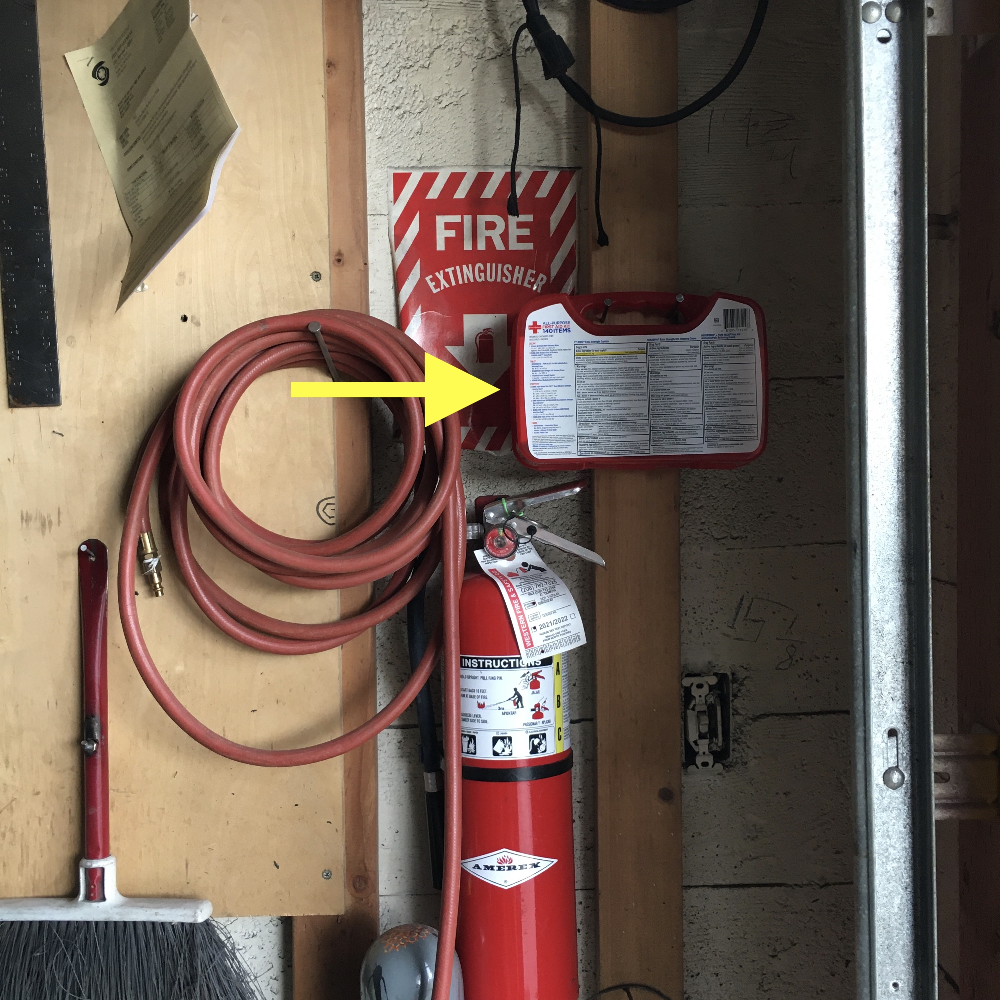

This is a collection of notes from members at ALT Space, a maker space in the Georgetown neighborhood of Seattle. If you're not already a member, then you probably want to visit https://www.altspaceseattle.com instead.
Running a collective space shouldn't be lonely, let's help each other out.
Two things you can do:
- Edit or add to this manual if you know something that could help us run the space.
- Subscribe and add to the shared Administrative Chores Calendar so we can remind ourselves when something is due.
Responsibilities
Everyone in the space
- Clean up your own messes, put away tools, leave the space 20% nicer/better/cleaner than you found it.
- Treat the space as if you own it, not in the sense of your own private workshop, but in the sense of a small business you co-own that you want to be attractive to your peers (customers).
- Be friendly and courteous to other users of the space. Know and follow the rules. Try to resolve interpersonal conflicts without escalation, but bring problems to a board member or manager if necessary.
- Use the space safely and responsibly, teach other users about safety in a respectful manner if you see unsafe activities or behavior.
- Attend monthly member meetings, make your voice heard on the mailing list or in the chat, think about ways the space could function better and share your input with the community.
Board of directors
- Take responsibility for implementing the will of the membership while ensuring the space’s operational needs are met.
- Attend the annual board meeting in early January.
- Attend other ad-hoc board meetings as required.
- Officiate member meetings when available.
- Mediate member disputes if they arise.
Officers of the board
Officers have a 1-year term and are selected from active board members in January. Two or more offices may be held by the same individual except that the President cannot also be the Vice President or the Secretary.
President of the board
- Write letters and deliver reports to the membership about the health, status, and future plans of the space.
- Act as a voice for the membership, ensuring the board takes actions that have positive impacts for the membership.
- Make sure the operations of the space are being performed in a competent manner.
Vice president of the board
- Stand in for the president when the president is unavailable.
- Help the president achieve their tasks.
- Purchase insurance for the space.
Secretary of the board
- Take minutes at the annual board meeting and at other meetings as necessary.
- File annual paper work with the Secretary of State.
- Organize and manage the space’s paperwork, board minutes, membership roster, and waivers.
Treasurer of the board
- Manage the space’s accounts. Keep and organize receipts and invoices.
- Provide funds as necessary to accommodate authorized purchases for the space
- Provide the board and the membership with reports regarding the space’s financial health and budget.
- File annual tax returns.
Space manager
This isn't a board position, but a bunch of tasks that must be done:
- Act as a conduit of information between members <=> the board <=> the public as well as altspace’s landlord and other vendors.
- Answer emails from the public, answer the phone if no one picks up, give tours and represent the space. Onboard new members.
- Manage the mailing list.
- Manage and collect payments from the membership, "go to the bank" from time to time.
- Ensure the space is running in a clean and efficient manner.
- Renew annual fire permit and fire extinguishers.
- Periodically inspect and test safety equipment.
- Restock first aid supplies.
- Acquire and restock consumables.
- Fix or arrange to fix broken tools.
- Coordinate use of the space for events, pro spaces, oversize materials, and member storage.
Management
Day-to-day management of the space can be performed on an ad-hoc basis by anyone who has the time and understands the problem. If you notice something that needs to be done, perhaps you would be a good person to do it. If you don't know how to do something ask someone who has done it before, then add the information to this wiki!
Access to sensitive information (accounts, credentials, keys, etc) is available on a need-to-know basis. If you need to know, ask around and someone will tell you.
Personally Identifiable Information (PII) of members should only be shared with directors of the board or agents duly authorized by the board to handle such data.
If you have time and you love the space consider stepping up to help keep the place running. By managing the space collectively we ensure the needs of the space can adapt to changes in membership or conditions on the ground.
Electrical
🚨 The building is currently under heavy renovation, so the details here are likely to change.
Most of the main space and the metal shop are wired into the "High Voltage" closet in the main space. This door is locked to slow down modifications from cavalier hackers (apparently this has been an issue in the past). If a circuit blows, ask around and you can probably find a way in to get it reset.
Woodshop
The legacy wiring in the woodshop is prone to flipping the circuit breaker, especially when working with hard woods in the table saw or planer.
The woodshop and half of the garage east of the woodshop (Scott's shop) are inexplicably wired to a breaker that lives way over yonder in the eastern most garage. Scott's shop also has a new separate dedicated run. Allegedly all the garages will get their own dedicated circuits run as part of the ongoing renovation before too long.🤞
In the meanwhile, gain access to the eastern most garage and reset the woodshop breaker. It's actually two switches, joined together with a metal collar (see photo below).
When the switch is blown you'll first have to push them all the way off to reset, and then back on.

Bi-yearly Air Compressor Servicing
Several compressed air lines run through the space. The compressor lives under the stairs in the west alley, accessible from the back door in the main space.
It's good to check the compressor every 6 months or so to make sure it has oil. There is a reminder to do this on the shared calendar. It's good to take a look in the compressor room every so often more regularly than that to make sure there are no problems.
On the east wall of the compressor room there is a grey metal switch box with a switch you can use to turn the compressor on and off. Always turn it off before any kind of servicing. The compressor has a large exposed belt and spinning wheel and can start suddenly at any time if not disabled. When working on or near the compressor, put a ziptie or small padlock into the cover of the switch with a note attached containing your name and contact info. This should help ensure no one turns the compressor back on while it's in a compromised state.
The compressor room also has a fire extinguisher on the west wall, as well as an office-style clip light you can reach for in the dark to illuminate the situation.
The large green thing in that room is an air drying unit, use it if you need the air in the lines to be extra dry, but turn it off when you are done using it. The tank under the compressor also has a timed discharge port at the back that discharges any collected condensation on a regular interval (as long as it remains plugged in and the outlet's protection switch hasn't tripped).
🔥Fire Permit and Extinguishers🧯
Some of our tools, like welding equipment and the plasma cutter, require us to have an up to date fire permit - it's a piece of paper hanging in the metal shop, that must be renewed annually.

As part of the permitting process, an inspector will stop by unannounced, usually 1-2 months after the permit is renewed. Among other things, they'll be verifying that our fire extinguishers have had their annual service. We typically do them at the same time as the permit, but you can check the tag on each fire extinguisher in the space to be sure.

The inspection helps make sure our space is operating safely, and also puts us on file with the fire department, so that in case there ever is a fire here, they'll know to respond based on the specific equipment and chemicals we have.
First Aid Supplies
There is a larger first aid box in the main space with smaller ones in woodshop and metalshop.
Each should contain (at a minimum):
- disposable sanitary gloves
- antiseptic wipes
- various sizes of bandaids
- antibiotic ointment
- ziplock bag and chemical cold pack in case of amputation 😬
- disposable splinter picker
- knuckle bandages
Additionally the larger box in the main space should have:
- NSAID like acetaminophen, aspirin, or ibuprofen
- eye-wash
- medical tape and gauze for when band-aids won't suffice
- butterfly/wound clamping bandages: e.g. 3M Steri Strip Skin Closures 1/4" X 3"
main space

woodshop 
metalshop 
Onboarding
Any current member can onboard a new member to the space.
Make sure that the new member:
- Has filled out a waiver
- Has read and understands the rules of the space
- Has made at least one payment of membership dues by cash, check, or paypal
If all of the above is true, you can tell them the codes and welcome them to the space! Have them send an email to the space manager to get an invitation to the mailing list and shared calendar.
Blank waivers can be found in the filing cabinet just to your right as you walk in the keypad door. Completed waivers can be left in the cash deposit box (on that same wall next to the first aid kit).
Communication channels
Currently, most day to day chatter is on our Discord chat server.
There is also the altspace-seattle google-group mailing list.
We use a shared google calendar to coordinate sharing high demand resources like the woodshop. You're welcome to stop by without a reservation, but if someone already has it reserved, they get priority. Ensure that your fellow members have fair opportunities to use the space by making your reservations not too frequent or long.
Liability Waivers
ALL users of the space must complete and sign a Liability Waiver before making use of any of the tools or amenities at the space.
If you bring a guest into the space make sure they fill out a waiver before they use any tools, or even if they're just going to be hanging out for awhile.
Completed waivers are kept in the black safe near the side exit and are organized into a number of folders:
- Pro - All currently active Pro members
- Basic - All currently active Basic members
- Supporter - All currently active Supporter members
- Potential - People who filled out a waiver but haven't signed up yet. -- It's good to go through these every now and again and shred the ones that are really old. If our membership is low, you can reach out to these people before shredding their PII and ask if they're still interested in signing up.
- Previous users - Not really a folder, but a large stack of previous members/ users of the space, sorted reverse chronologically
- Possibly not - Waivers of previous users who we may not want to allow to rejoin the space for whatever reason. Write notes on the back of the waiver.
If you have a waiver you need to file but you don't know the code to the safe, you can fold it in half and stick it in the cash payments box near the first aid kit.
Updating this Manual
The content of this manual lives at https://github.com/Air-Light-Time-Space/wiki.
If you're not familiar with Github, or otherwise have questions about editing the manual, feel free to ask in our discord server or on the mailing list.
If you are familiar with Github, then hopefully this is straight forward. The content lives in a series of markdown files.
Whenever a change is merged, the site will be automatically rebuilt and redeployed using Github Actions. It could take a minute.
Previewing your changes locally
Github lets you preview your markdown changes, but it may render things a little differently from our wiki software. If you'd like to see you changes before you commit them, or if you want to test links, you'll need to build the wiki locally before pushing your changes. To do so, you'll need to install the tool that builds our wiki, mdbook.
You can install mdbook by downloading a
pre-built release, or if you have
rust installed, you can build it yourself
with cargo install mdbook.
Meeting Minutes
Minutes from past meetings are reproduced here to provide context and direction for space decisions.
2023
- 2023-07-03 - Monthly Member's Meeting
- 2023-06-05 - Monthly Member's Meeting
- 2023-01-15 - Annual Board Meeting
2022
- 2022-12-06 - Monthly Member's Meeting
- 2022-11-07 - Monthly Member's Meeting
- 2022-02-07 - Monthly Member's Meeting
2021
- 2021-12-06 - Monthly Member's Meeting
- 2021-11-01 - Monthly Member's Meeting
- 2021-10-04 - Monthly Member's Meeting
- 2021-09-06 - Monthly Member's Meeting
- 2021-09-01 - First Annual Board Meeting
- 2021-07-05 - Monthly Member's Meeting
- 2021-06-07 - Monthly Member's Meeting
- 2021-05-03 - Monthly Member's Meeting
- 2021-04-19 - Monthly Member's Meeting
- 2021-03-15 - Monthly Member's Meeting
2020
- 2020-11-16 - Monthly Member's Meeting
- 2020-10-19 - Monthly Member's Meeting
- 2020-08-17 - Monthly Member's Meeting
- 2020-07-06 - Monthly Member's Meeting
- 2020-05-05 - Monthly Member's Meeting
- 2020-04-30 - Special Member's Meeting
2019
- 2019-08-05 - Monthly Member's Meeting
- 2019-06-03 - Monthly Member's Meeting
- 2019-04-01 - Monthly Member's Meeting
- 2019-02-04 - Monthly Member's Meeting
- 2019-01-07 - Monthly Member's Meeting
2018
2023-07-03 Member's Meeting
Minutes recorded by: ???
??? Members in attendance: ???
Agenda
If you'd like to add something to the meeting agenda, add it here before the meeting. Please include your name, topic, and how long you think it should take.
No one has added any agenda items for this meeting yet, but you can be the first!
Example:
- Johnny Appleseed: Fake proposal for cider press (10 minutes)
- Ada Lovelace: Fake announcement for hacker fair (5 minutes)
If you don't know how to edit this page, please ask someone on discord or the mailing list to do it for you.
2023-06-05 Member's Meeting
Minutes recorded by: Michael Kirk
4 Members in attendance: Matt Chang, Maxx, Michael Kirk, Noah
Noah: filed our federal taxes. 💸
Noah successfully filed last three years of federal taxes.
We may be liable for a fine for the filing delays, but Noah requested an exemption. Noah mentioned worst case would be something like $10/day up to $10k, but given we're such a small organization that seems unlikely.
(https://www.irs.gov/payments/failure-to-file-penalty says the max penalty is 25% of your taxes, so it seems like it'd be much less than that if they decide to fine at all)
- 👷 TODO Noah: Official change of address form
- 👷 TODO Noah: Washington state taxes
- 👷 TODO Michael: Business license renewal (update board members).
Michael: noted meeting attendance is sparse.
It'd be nice to have more people at the meetings. We talked about some ways to have automated reminders and to solicit agenda items.
- 👷 TODO michael: set up calendaring system to remind himself to broadcast via email/discord ~5 days before the meeting and the day before the meeting.
Noah: reported the video conference link is broken.
We used to have a stable link to our video conference / virtual meeting at aloha.altspaceseattle.com. It's currently broken so we've been using an adhoc solution in the meanwhile. Michael may have broken it while updating our website ssl (sorry!).
It's partially a custom piece of software written by Noah.
- 👷 TODO michael: going to "take a look" and probably ask Noah for help if he gets stuck.
Maxx: wants to tweak the layout upstairs.
Maxx proposed swapping the electronics+3-d printers with the sewing area, so that the soldering and 3-d printers can be closer to potential ventilation access along the North wall.
- 👷 TODO maxx: follow up w/ Matt Mackenzie (@msm) who's been actively organizing the upstairs space.
Maxx: is going to donate a workbench.
Maxx has a 48"x32"ish workbench on wheels and offered to donate it. We thought it was a good idea. Noah is going to provide a truck and they're going to move it into the space this weekend.
- 👷 TODO maxx and noah: get that bench in!
Michael: wants to sell excess computers for fundraising.
We were recently donated a bunch of tools and desktop PC's (like 18?). Some are being, or will be, put to good use around the space, but we're unlikely to utilize all of them.
Michael thinks we should sell the remainder. No concerns raised by the group, but it was noted we could probably get more money selling them individually vs. taking the entire lot to e.g. RE-PC. Though it might make sense to offer a bulk discount.
- 👷 TODO Michael: Post some computers on craiglist/offerup/w.e.
Michael: realized we have a functioning phone.
Just dial 1-87-SPACE-ALTS!
Michael was surprised when the phone in the space rang and answered it and it was a real person calling for a tour. Apparently Dan fixed the phone recently. Thanks Dan!
Long ago (at the cherry st. location?) there used to be a failover, so if no one answered the phone, it'd roll over to a members cell phone, but that no longer seems to be in place. We could set that up again, but no one stepped up to bottom line this.
- 👷 TODO "someone should": set up phone failover system. Maybe a pager-duty style rotation to spread the burden.
Matt Chang: wants to set up a pottery corner
Matt wants to set up a pottery station with our potters wheel. It might be especially good for people who can't operate within Seattle Artist League's hours. No concerns raised by the group.
Maxx: is concerned about dust upstairs.
Maxx suggested hanging some sheets or other dividers. No specific plan of action was proposed, but it seemed like a good concept with no objections raised.
2023-01-15 Board Meeting
Minutes recorded by: Matthew
Directors in attendance: Noah Tippett, Kevin Friberg, Mars Saxman, Matthew McKenzie
Also in attendance: Andrew Huff
Directors not in attendance: Ava Hahn, Ben Tramposh
Meeting called to order at 1540 hours Present: Noah, Kevin, Mars, Matthew
Item 1: Move Andrew Huff to board of directors APPROVED: 4-0
Item 2: Elect Officers
President nominee: Matthew McKenzie APPROVED: 5-0 Treasurer nominee: Andrew Huff:APPROVED: 5-0 Secretary nominee: Mars Saxman: APPROVED 5-0 VP nominee: none elected for 2023
Item 3: Year end report to the membership Matthew and Andrew will create; Noah will consult. Goal is to complete this by Jan. 31.
Item 4: Retrospective on move and look ahead
Ventilation: Member Era volunteered to lead on implementing a system. There are concerns about a fan having a high enough cfm rating; and correctly cutting/installing the hardware.
Need to try fan motor that we have on hand.
Item 5: Admin obligations
Noah explained our tax stats; we are tax-free on membership dues.
We need to file federal taxes and approve bylaws this year (2023) to keep our organizational status with the federal government. Not hard, but needs to be done.
Noah drafted a set of bylaws that haven't yet been approved. We will put approving them on the agenda for the Feb. general meeting.
Item 6: Budgeting for consumables; prioritized list of upkeep/upgrade priorities for the space. Plan to resume purchasing basics -- e.g. gases for the metalship, tape and shop towels.
Item 7: Manager duties. Short list of responsibilities, including access system updates, tours/open houses, last-resort to reply to membership email inquiries, general awareness of the space.
Item 8: Modernize administrivia for the new space -- signage, etc. Posting email address to reach the manager with questions or to alert them to broken tools.
Meeting adjourned at 1620hrs.
SUPPLEMENTAL NOTE: We need to renew fire permits (expired 9/2022); will complete the metalshop ceiling prior to calling SFD for inspection
2022-12-06
2022-11-07
2022-02-07
2021-12-06 Member's Meeting
Minutes recorded by: Aidan, Michael
7 Members in attendance: Aiden, Andrew, Bryan, Matt, Michael, Valerie
Heat
Val brought up the concern about the lack of heat.
Andrew: traced power from the heaters to the thermostat by the side door. Looked like someone had previously pulled the thermostat out, but he didn't want to mess with it further.
Val: Should the landlord take care of that? Is it in the lease? (lease is by the side door)
(Any input from folks who are in the know is welcome)
Woodshop
The woodshop is a very (the most?) busy desirable space right now.
- Longer term we can look into getting the north space back (if the numbers pan out, it would require a capitol investment), or consider alternative spaces, but in the immediate term we have ratified the following proposal:
Ankur: (via noah) there was some incentive in renting north and south space together from landlord since north space can be accessed from south space.
Ankur: Having front facing space is good advertising.
Aidan: garage front is nice. We have some duplicate tools, maybe even having two woodshop spaces is doable. Let's take account after new insurance is due, since there might be ramifications.
Ankur: biggest bottleneck is access to tablesaw. When scheduleing - indicate if you’re open to sharing the space or if you want the entire shop. do you need: table saw, cross cut saw, assembly
Bryan: proposed maybe there be some kind of per-member hours budget
Ankur: maybe that will discourage new members...
Calendaring Proposal
When reserving time on the shared calendar:
- Members are asked to include contact information on their bookings on the calendar so that multiple people using the space can be negotiated.
- Members should limit schedule bookings to 4 hours maximum and will lose priority if more than 15 minutes late to their booking.
- Unanimously approved across 7 members
Vending machine update from Michael:
- still looking through leads, many folks have flaked. Noah has a lead (Matt) who is interested in it. We are working on having it extracted.
- in 1 week we will authorize spending to borrow a truck for up to 50$ to get the vending machine for matt if noah has not been able to assist us.
"Buying Things" Proposal
- Full Proposal text here, but basically: To help maintain the space, any member can purchase up to $50 of supplies from this pre-authorized list and expect a prompt reimbursement: https://docs.google.com/spreadsheets/d/17nph-7mVd-YzlKXFxk2uTholVokZJ7OVb105P4w_eaY/edit#gid=0
- The treasurer reserves the right to veto a reimbursement in cases of abuse.
- Unanimously approved across 6 members (Andrew had to leave before we voted)
PSAs
- PSA: Val is a hero for cleaning the microwave
- PSA 2: use sensitive power strips so that we dont keep triggering the breakers
- PSA 3: Huge thanks to Michael for helping me with the meeting notes today!
2021-11-01 Member's Meeting
Minutes recorded by: Aidan
Members in attendance: Aiden, Andrew, Edward, Marshall, Michael, Noah, Valerie, Vera
Altspace Meeting Minutes 11/1/2021 8 members attended and noted the following
- Val will be in charge of the scholarship program
- Heat in altspace is not yet a thing as the base heaters are broken. People bringing in space heaters is welcome but risky if someone leaves theirs on.
- Michael will set up a temperature probe
- Membership meetings should stay primarily virtual even beyond the pandemic because that is easiest for the membership who are scattered across the state and more. A proposal may be made to create a better tech solution to have a hybrid virtual and in person approach in the space.
- A whitelist of common supplies should be solicited from the membership of which any member can purchase an amount of for the space and be reimbursed by the treasurer without needing a vote at a membership meeting
Additionally, the 8 present members voted on the following:
- Unanimous vote to discard the vending machine. Michael will put it on craigslist
- Unanimous vote to approve a 500 dollar investment in putting an antenna on top of altspace for Open Connectivity Lab
- Unanimous vote to approve up to 500 dollars in networking equipment for Edward to use in setting up a network at altspace
Topics including Calendly integrations and woodshop conflicts were punted to the next meeting as affected members were not present.
Special thanks to Michael Kirk and Edward for committing to follow up on several points voted on by membership present at the meeting.
2021-10-04 Member's Meeting
Minutes recorded by: Aidan
Members in attendance: 11 Individuals
Meeting Minutes: Member's Meeting 10/4/2021
- 11 Individuals attended with up to 9 at any given time
- GAME NIGHT THIS FRIDAY AT ALTSPACE AT 5PM!
Members discussed the following information:
- We will be at the Bellingham Maker Fair with stickers and a sign
- There are currently 5 members on the Altspace board, and we are looking for more. Talk to Noah for more information.
- We currently have 4 officers elected from the board:
- Treasurer (Noah)
- VP (Noah)
- Secretary (Aidan)
- President (Vera) An informational post about the board and its officers will be made soon
- In order to do something with the vending machine we will need to come up with a proposal and vote on it at next meeting
- We are reaching capacity for pro spaces but may be able to get another one together.
- Several members expressed interest in having the north space back. It was agreed that we would need to be able to cover the additional rent. Additionally we are month to month right now and should be seeking a more proper lease.
- Our current margin is somewhere between 1000 and 500 a month.
Additionally, the members present voted on the following:
- Spending up to 100 dollars to replace all 5 blast gates for the dust collector (approved unanimously, parts list sent to Noah)
- Replacing a set of planar blades for up to 90 dollars (approved unanimously)
- Andrew is authorized to replace organizers in the woodshop with french cleats (approved unanimously)
2021-09-06 Member's Meeting
Minutes recorded by: Aidan
Members in attendance: 3 attending members
Hello All, Just a reminder: Our monthly member meetings are held every first Monday of the month at 6:30 on Jitsi. The link to join is always posted here and in the discord.... save for this Monday evidently. In the future, the email notifications will be automated and the link will be static. The meetings are a time where any member at basic level or higher can propose purchases of new tools or parts, changes to rules, or raise any concerns they may have about the space. The vast majority of decisions affecting the maker space are made at these meetings democratically by the attending members.
Here is a summary of today's meeting: 3 attending member came to a full consensus on the following:
- follow up with Val and see how the sewing machines need servicing. Altspace budget should be used for any parts or services needed
- thread should be acquired for all sewing machines
- a new iron should be acquired for the sewing area
- our current iron should be discarded
- Marshall is authorized to place flytraps around the space
Additionally, the following comments were made:
- folks need to be cleaning up after themselves. Some amount of custodial work is not yet happening. This may also fit into our current scholarship options for folks seeking less expensive basic memberships
- we should investigate the band saw. It is not able to cut through wood or aluminum anymore. Unsure if repairs or replacement are needed. If any member can take a look and post their findings here or in the discord that would be wonderful!
- we should look into having stewards for each area.
2021-09-01 Board Meeting
Minutes recorded by: Stephanie (Non-member and Noah's domestic partner)
Directors in attendance: Noah Tippett, Vera Ranguelova, Aiden Hahn, Mars Saxman
Directors not in attendance: Kevin Friberg
SALTS Board Meeting, Sept 1st 2021
Attendees:
- Noah Tippett
- Vera Ranguelova
- Aiden Hahn
- Mars Saxman
Agenda:
Officers
Noah mentioned that there are 5 members of the board and we need 4 officers, so he’s hoping each person can step up to be an officer. There are: President, Vice president, Treasurer, Secretary.
President Vice President Treasurer Secretary
Noah has been, and what is needed for Altspace to function
- Filing paperwork with the state and federal government for taxes etc
- Onboard new members, give tours (others can and have been helping w ith this)
- Makes sure all of our stuff like fire extinguishers are in compliance (needs tobe done but not necessarily by an officer)
- Takes out trash and cleans up space
- Keeps track of all paperwork like secretary, though not as officially as one might – could be nice to have filing cabinet in the space
- Has credit card for space and can buy stuff
- Keeps track of bank accounts – more people can be added with different limits, so can make this more complicated as needed.
- Making decisions to keep Altspace functioning – trying to do this with as much feedback and input as he can.
- Proposing bylaws and changes to Altspace
Aiden asked whether there is something that fits in with what he’s been doing for the space – hosting meetings and giving tours is something he’s been doing. What would fit with officer position? Noah said this could be President/Vice president for officer, though anyone could be giving tours. Some member of the board should be at each members meeting so this could also fit with your interests. Aiden then said he understands Board; do all officers need to be elected today? An alternative might be to elect people who are willing today, but also could recruit officers at members meeting.
Noah said we need bylaws officially voted on by the end of Sept. filing deadline. We might need officers by the time we file those bylaws. You commitment would be only til January if you’re anything but the Vice President, who becomes President the next year. Noah imagines recruiting for the board in fall, then each officer chooses their successor in January.
Vera asked if someone needs to leave the board for any reason, what do they do? Noah mentioned this is in the bylaws: Can write letter to the board, Can stop paying dues and leave (automatic departure). Then the board will do a special meeting to select a new officer in that spot. Also the members can remove a board member/officer, and this removal motion needs to propose a replacement.
Vera wants to know the "job description" for each officer role.
- President – Makes sure everyone else is doing their job. Writes letters to the membership on how we’re doing.
- Vice President – Learning how to be the President, steps in while P is on vacation.
- Secretary – Take notes at meetings, create cohesive notation of all decisions we’ve made at meetings or not at meetings (decided between board members), file paperwork with secretary of state to list directors, any other annual filings, keeping track of all of Altspace paperwork – insurance, bank account, loan, list of members. Some of this could be electronic but that’s not designed yet. Default is paper.
- Treasurer – In charge of accounts, files taxes (or makes sure they’re filed by accountant). Has access to bank account, gives access to others who need it, make sure use of money is in compliance with AltSpace needs.
Aiden asked if list of current members would be gleaned from PayPal. Noah said actually he made a current list that’s in a Google Doc. Most people pay on PayPal, but some people pay cash or check, so those wouldn’t show up on PayPal. Noah has done the filing for this year. Aiden volunteers to be secretary!
Mars made a life decision and thinks he might need to exit the board. He bought a sailboat in North Carolina to fix up and live on! He still loves and wants to support AltSpace, but can’t really help after the end of October. He doesn’t know how we feel about that. Noah is happy for Mars to stay on the board even under those circumstances. Mars is happy to be connected to AltSpace, to help with disasters, but not able to be consistently available for meetings. Noah confirms that a non-officer board position would be a good fit for Mars. He mentions that that kind of position would be possible for Vera too.
Vera says treasurer too much for her but she could take on Vice President for now, though she’s not sure about automatically becoming President next year.
Noah says he can be president and Treasurer. And he could change bylaws to remove being Vice President. And discussed some other details.
So, officially:
- Noah will be Vice President and Treasurer
- Vera will be President
- Aiden is Secretary
Vera is still interested in more detailed job descriptions, especially hers. Right now Noah is the shop manager, so if she sees things that are a problem she lets Noah know. The only real responsibility of the president is to roll a dice at meetings when there’s a tie. Otherwise it’s being the voice to the membership. Noah says her only job for now can be trying to make people sign up for the board.
Noah will contact Kevin, who missed the meeting today, to let him know about this.
Votes for officers:
- 4/4 votes for Aiden as secretary
- 4/4 votes for Noah vice president
- 4/4 votes for Noah treasurer
- 4/4 votes for Vera president
Rates
Noah proposes we make $250 the new rate for Pro membership – 4/4 yes
Basic rate moved to $65 for voting? – 4/4 yes
Vera says she thinks it could be a little more expensive than $50. Noah says he chose the $50 rate for Basic members because they were 2/3 of the membership and we didn’t have pros at beginning of COVID. Now we’re saying your $50/person
Keep supporter name your own price? 3 of 4 board members say Yes
Bylaws
- Bylaws proposed to membership? – 4/4 yes The bylaws are in email but once ratified these will be posted on our website. First 3 years, board members can make changes by 2/3 vote. After 3 years the membership needs to vote on changes to the bylaws.
Insurance
- Accept staying Insured – 4/4 votes, yes
- Extra liability personal board insurance – 0/4 votes (though Vera seemed a little on the fence; can vote again in January)
Protocols/Organization
****** is code of the safe at Altspace (bythe back door) Membership list is in the safe. Pro member waivers are there. (Not as up-to-date as he’d like; Aiden might update) Volunteers/Scholars are in there too, and Basic members. Also in the safe: Gigantic stack of “not members but have waivers”. All previous member waivers are good for if they sue us or other purposes. Also a list of members who we might want to not have as members ever again. No reasons mentioned there but there are notes in the Google Sheet. (Called “Possibly not”) Potential member waivers – filled out a waiver but never joined. He historically has kept them around for 3-4 months and went through to contact recent folks to see if they want to sign up. But then shred them after a while to protect their confidential information.
Other system is Pay Rent in Cash box. Noah was going to give keys to other board members. This box also holds keys to garages.
Oberon
Has been in the space since he was kicked out. Don’t think he’s been in the space since we changed the locks. Aiden says he’s not a problem right now; wait til he makes contact again. Aiden was worried about it because he wanted things from us. Noah said he needs to provide detailed list of what is his, and proof that it was his. He hasn’t provided that.
Other notes
Vera wants to figure out where to electronically track our documents etc.
- INW had Google Drive and our stuff is on there.
- Aiden doesn’t like Google and Noah happy to go away from it.
- Vera is happy with Wave Accounting, and it’s free.
Other agenda items? Wet walls for winter? Vera asked if this will be a problem this year. Noah says he hopes that the renovations are good for this. Alternately, this is a courtyard overflow issue that Ron needs a french drain for. So we’d wait til after signing a new lease to ask for a solution to this.
Long-term, if Ron doesn’t kick us out but he seems iffy on Altspace, maybe we could buy the second Coyote Central lot from them. If Altspace dissolves for some reason, the assets currently go to INW. But if we bought their lot we could give assets to Coyote Central.
Long-term if we get kicked out, we could move elsewhere. We make money now. Noah recently made an address sign for Ron so maybe that gives us better relationship.
Mars says he’s impressed with the revenue. He hasn’t seen Altspace thrive quite so well. Noah says he doesn’t feel like he’s done anything special but hopefully putting together the bylaws will help keep whatever we’re doing well, going.
Vera asked what’s going on with the north space. Noah said that we’re pulling 4,600 now. But we’d need 7,000 or 8,000 revenue to afford the back space too. And Ron would like to rent these spaces together. Noah would like to rent it with a buffer. We’re in “wait and see” mode now though.
2021-07-05 Member's Meeting
Minutes recorded by: Noah
Members in attendance: Ankur, Aidan, Yossi, Marshall, Noah, Dan, Kevin
Many thanks to Ankur, Aidan, Yossi, Marshall, Dan, and Kevin for making it to the meeting last night!
We voted 6/7 to buy the stuff in the linked proposal plus new air filters for the wen air handler in the main garage, a new fence for the miter saw in the wood shop, a raspberry pi for the delta 3d printer and a new mainboard for the printrbot metal. With the battery deal Jason identified I think the total should still be around $1000. I will endeavor to start acquiring these things for us. If anyone has any ideas for which free power tools we should acquire with our batteries let me know, otherwise I will probably just get a couple more power drills.
We also discussed COVID restrictions and were all of the opinion that allowing guests back into the space at this point is probably not problematic. If you have any concerns about it please speak up, otherwise I think we should tentatively re-allow guests at this point and vote on a more in-depth re-opening plan at our next meeting on August 2nd.
Thanks everyone for all your hard work!
2021-06-07 Member's Meeting
Minutes recorded by: Aidan
Members in attendance: Michael, Marshall, Dan, Aidan
Hello All,
At today's monthly member's meeting a panel consisting of Michael, Marshall, Dan, and I all approved the relaxed COVID-19 guidelines as proposed by Noah on this mailing list. Ill include them below.
- More than one person per shop now allowed
- Continue using the calendar for scheduling so that we can contact trace if a spreading event happens
- Wear masks if more than one person is in the space
If you prefer operating under stricter or more relaxed guidelines please attend the next monthly members meeting. If you have any concerns or accessibility needs that are precluded by these guidelines please let us all know so that we can accommodate you.
Thanks, Aidan
2021-05-03 Member's Meeting
Minutes recorded by: Noah
Members in attendance: Matthew, Aidan, Ben, Kevin, Salt, Noah
Thanks so much to Matthew, Aidan, Ben, Kevin, and Salt for joining this month's meeting, we had some very productive conversation and a lovely time.
We voted 6/6 to start using Jitsi for all future meetings, and even managed to transition the meeting to Jitsi partway through. There may be some slight logistical challenges setting up a permanent unchanging meeting URI, but several potential solutions were discussed. Stay tuned for further updates, our next meeting will be on Monday, June 7th.
We also confirmed the last-minute board nominations of both Aidan (6/6) and myself (5/6).
Other than that, we talked a bit about signage (we are waiting for construction before we start installing any new permanent signs, but Aidan is going to try pressure washing our name into the sidewalk).
We had some very fruitful discussion about bylaws and the mechanics of implementing a functional maker space. We're hoping to have a member-wide vote for the enacting of some bylaws possibly as early as our next meeting, so if you haven't had a chance to look at or interact with the proposed bylaws yet, please check out the mailing list discussion.
We talked briefly about the wood shop move. The new wood shop is ripe and ready to have more tools moved into it. Any wood workers or other potentially interested parties are encouraged to build or move shelves, workbenches, and tools into the new shop at your discretion. In case you didn't know, the new shop is to the right of the current wood shop/main entrance and the code for it is 4697. You can check out this thread for some inspiration.
Thanks again and I hope you have a lovely week!
2021-04-19 Member's Meeting
Minutes recorded by: Noah
Members in attendance: Kevin, Vera, Aidan, Matthew, Dan, Noah
Thanks to Kevin, Vera, Aidan, Matthew, and Dan for attending this month's meeting! Since we have still not yet enacted any bylaws we counted all relevant votes, but for the sake of transparency Dan, Aidan, and myself would all be considered non-voting "legacy" members under the current draft proposal of the bylaws.
We voted to elect an initial board of directors consisting of:
Mars (6/6 votes)
Kevin (6/6 votes)
Vera (5/6 votes)
Aidan (6/6 votes)
Myself (6/6 votes)
Since Aidan threw himself into the ring at the last minute (and I threw myself back into the ring) you can have a chance to confirm the two of us at our next member's meeting.
As I explained at the meeting we're gonna be kind of in a "dry run" mode for a hot second until we get our bylaws fully ratified. Basically as of now I'll endeavor to carry out the wishes of the board as elected even though they are not yet listed on our official paperwork in order to ease the transition to the new leadership.
We also voted 5/6 (+1 prevote) to donate $500 to the Local Connectivity Lab in regards to our last half year of being locally connected by them for free. We also voted 5/6 to move the monthly member meetings back to the first Monday of the month so the next meeting will be on May 3rd. This is still amenable to future change if it is discovered there is a day at which a maximal number of members can attend. The monthly meetings drive the major shape and progress of the space so the more engagement we can bring to them the better overall!
Other than that we talked about ways to increase digital engagement (especially during times of lockdown) and Aidan proposed creating a more accessible real-time chat environment by bridging Matrix and Discord servers. It sounds like Aidan is willing to help set this up but would prefer not to manage the Discord side of things, so if there is anyone with experience using Discord who is interested in administering that please consider volunteering for this role!
Thanks again everyone for making it all possible!
2021-03-15 Member's Meeting
Minutes recorded by: Noah
Members in attendance: Kevin, Matthew, Scott, Ben, Noah
Thanks Kevin, Matthew, Scott, and Ben for attending the meeting. Everyone probably wanted to go back outside to enjoy their extra hour, so the meeting was brief.
We voted for Scott to make us a sign of some sort, but decided we should talk to Ron about his plans for signage before we commit to a design. We can share ideas in the thread devoted to that idea.
Kevin told us about himself and his aspirations to be on the board. He's a long time member who loves the space and wants to see it succeed. I've long been a fan of Kevin's and I trust him to make wise decisions. He's got my vote!
Unfortunately we didn't hear from any other prospective board members.
We decided to push the question of changing the meeting schedule to the next meeting in the hopes that more interested parties will be able to show up. That means the next meeting will be on... (checks notes)... April 19th--see you there!
We talked about how I'm terrible at leading meetings and sending reminders. I'll try to do better.
Thanks again and enjoy your hour!
2020-11-16 Member's Meeting
Minutes recorded by: Noah
Members in attendance: 3 voting members
Thanks so much for everyone who attended the meeting! There were only 3 voting members in attendance but we voted unanimously to pursue a 1 year lease with an option for a 3 year lease following. Since we received no other absentee votes this looks like the course we should pursue.
2020-10-19 Member's Meeting
Minutes recorded by: Ben
Members in attendance: Adalynne, Ankur, Ben, Jack, Geoff, Noah, Olivia, Brandon, Kevin, Daniel, Esther
ALTSpace Working Group
Member Projects
- Adalynne - potentially available on weekends - 3d printing/fusion 360/programming
- Ankur - working on chairs and circular saw. Available most weekday evenings. Good at Excel. Lives 20 min north of the space. Willing to join email alias
- Ben - Interested in tool library, doing construction at house so busy a lot lately
- Jack - metalwork projects. Could possibly give tours but needs better familiarity. Weekend reorg.
- Geoff can help on the weekends - might be able to write code for tool inventory
- Noah trying to transition the space to be more self-sufficient
- Olivia - working in the woodshop pretty often, taking commissions. Only available to give tours on weekends unless already around.
- Brandon ran a space in New Hampshire and has bandwidth. Add to alias.
- Kevin - helped run the space a few years. Back to support how possible.
- Daniel - working frequently next door. Able to give tours infrequently. Willing to join alias
- Esther - UW CompSci PhD student. Working to provide LTE access during COVID. Community network talking with Dan Ryan who hosted a Meshnet node. Tiny home village.
Reorganization
- INW storage clear-out
- Confine to a pro-space?
- Postpone woodshop idea if they carry the cost of the garage
- Need the space for new pro-members
Member Needs
- Access code clarity - repository
- Ron changed lock on side-gate
- Anyone know python coding? Jack will work with Noah.
- Get the glow forge back
- New laser cutter but needs tubes
- Olivia needs their pro-space
New Lease Agreement
- Month to month or negotiate new annual terms
- Escalation clause
- Side walkway/antenna mast(/ship door room&electric)
- Insurance issue
- Ron negotiation strategy - we’d like to continue month to month, but will circle back in 3 months knowing what membership trajectory is.
- Bills are paid
- Access to the walkway - check the lease.
WIFI/LTE Node
- Serves community and potential to cover our needs as well.
- Better location for antenna?/re: lease
- Applied for Seattle community broadband
Divison of Labor / Bandwidth Check
- Tours
- Could resume Sun tours
- Match calendar events to tours - sendout to email willingness to give tours. New members might not feel comfortable.
- Expand the alias, kick to larger group as needed.
- Work with the door open.
Tool Library
- Email accountability sufficient?
- Spend some money on consumables and equipment repair.
- Need a computerized inventory - tagging isn’t always kept up
- Tool chit system - name and phone number for communal tools.
- Write proposal for vote at next meeting.
- Include return date, 3 day limit
- 48 hour lead time
- Geoffery willing to write inventory system
Draft MISSION / VISION / VALUES / BYLAWS (501c7?)
Mission:
- ALTSpace is a radically inclusive makerspace that builds artistic community through creation of epic shit in the company of inspiring people of all abilities and experience.
- Reduce environmental and economic waste through sharing tools and materials
- Share, learn, and collaborate in a welcoming and actively inclusive space.
Vision: ALTSpace will be a community institution with limitless possibilities to design, build, and perform creative endeavors in the company of inspiring people - A collaborative hub that can accommodate large scale art builds, learning and education spaces, community meetings, interactive galleries, performances, and events.
Values:
- Accessibility - ease of access for all (adult) human-types regardless of experience, skill, income, or physical ability.
- Active Inclusivity - members will actively welcome and engage with other members, provide tours to prospective members, and recruit friends.
- Respect / Anti-Chauvanism - harassment, patronization, and other such bullshit will not be tolerated
- Participation - members contribute to the life and maintenance of the space as often as they are able
- Economic Opportunity - support artists in earning a living from their craft and hobbyists who wish to turn their passion into a source of income.
- Outreach - Continual exploration of ways to plug into the Central District neighborhood and greater Seattle creative community.
- 20% Rule - Leave the space 20% cleaner than you found it.
2020-08-17 Member's Meeting
Minutes recorded by: Noah
Members in attendance: No one
Sheesh, it looks like I bungled this meeting up (again!) Somehow in my mind yesterday was Sunday (?)
Anyway, I apologize (again!) We can re-try for next week if everyone's down with it.
Also, ps, does anyone else want to be in charge of meetings?
2020-07-06 Member's Meeting
Minutes recorded by: Ben
Members in attendance: ?
ALTSpace Working Group
6 July 2020
Reorganization
- Giving away furniture from North Space - if anyone wants it, contact altspace@ignitionnw.org
- Carpentry and electronics solutions needed during south space reorg.
- Garage 9 cleanout
- Oberon came to pick up one bin. Stuff out by Fri.
- Move woodshop to that garage? space at front could be Tech
- Different facade, door and window.
- Sit down and long term plan with Ron
- Let’s make a plan - Michael has experience in retail space design
- Working Group to meet next Monday
COVID
- Re-opening plan/schedule
- Phase 2, same plan. Phase 3 - up the numbers but not allow guests and still using cal. Phase 4 - fully open. No tours until then except by appointment. To be fully open we need to be able to actively market again.
Meeting Schedule
- Third Monday of the month?
- Decision points are usually at the end of the month, so first monday is often too late.
Banking
- Alaska Credit Union?
- Does anyone else want to be on the account? - email out
Tax receipts for tool donations. We could give membership in kind.
Bring it to the members if that would be the deciding factor in whether anyone’s going to
501c7 would be prohibited from having a company membership, operating in the public sphere.
Insurance shopping
- Better to have options - Ben will do.
2020-05-05 Member's Meeting
Minutes recorded by: Noah
Members in attendance: those who attended
Hey there ALTSpacers,
Thanks to those who attended the meeting last night. We decided we could probably soft-open the space again with a few rules. Here's how it's gonna work:
- Pre-schedule your usage of the space in one-hour blocks on the ALTSpace calendar. Put your name and the area you want to use in the title of the event (e.g. "Noah is using the Wood shop"). The areas are Metal shop, Wood shop, Main space.
- One person per area at a time. Make sure not to overlap an existing schedule. First come first served! If there is a conflict try to get in touch with the person and work it out.
- Pro members can come into the Main space while someone else is working there, practice appropriate social distancing measures. Pro members should still schedule use of the garage-shops.
- If you don't yet have the new code contact me and I will tell you. I will keep a list of those who've requested access to the space in case we need to do contact tracing at some point :o
- Sanitize tools before putting them away
- We're not going to share dust masks. I've temporarily removed the dust masks from the shops. For other safety gear (gloves, safety glasses, etc) consider bringing your own. If you do use ones from the space sanitize them before and after use.
- Consider wearing gloves and a mask while you use the space
- Wash your hands during and after use of the space
Anything else you want to add to the list? Discuss it here.
The space has some sanitizing supplies, some clorox wipes, some hand sanitizer, alcohol, bleach, etc. but could use more. If you have extra supplies you don't need please consider bringing them with you and donating them to the space.
There was some concern expressed during the meeting that some people might pull childish stunts like changing other people's scheduled calendar entries or booking up 10 hours every day and coming in at their leisure. I'm hoping we're all above that sort of thing, but at the meeting we agreed this is probably grounds for kicking you out, so play fair and give people the benefit of the doubt.
I will be working on organizing the supplies closet for the next week or so, so please pardon the chaos towards the front of the main space.
Thanks and stay healthy!
2020-04-30 Member's Meeting
Minutes recorded by: Ben
Members in attendance: ?
ALTSpace Working Group
30 April 2020
Reorganization
- Agreement with landlord to contract into the previous footprint and give up the North Space brings us within budget to continue through end of lease term in October.
- Giving away furniture from North Space - if anyone wants it, contact altspace@ignitionnw.org
- Carpentry and electronics solutions needed during south space reorg. Contact Noah.
- Supporter membership now permanently pay what you can
Mission and Vision
- Previous: ALTSpace will be a community institution with limitless possibilities to design, build, and perform creative endeavors in the company of inspiring people. A collaborative hub that can accommodate large scale art builds, learning and education spaces, community meetings, interactive galleries, performances, and events such as potlucks and group fundraisers.
- Brainstorming:
- Make epic shit - supporting the making of
- Share, learn, creative collaboration
- Provide artistic space for hobbyists, makers
- Multi-dimensional access: ease of entry into artistry and skillcraft
- Environmental - saving landfill space with shared tools, equipment and resources
- Outreach - neighborhood, seattle creative community
- Accessible - not intimidating
- Inspiration from other creatives
- Classes and workshops
- Multi-member collaborations
- Project boards - post what you’re working on
- Safety - learn to use dangerous equipment in a controlled, accountable way
- Diversity and inclusion - economically disadvantaged as well
- Fun, welcoming, not intimidating
- Experimentation
- Unconventional education spaces
- Providing economic opportunity / rehabilitation. Supporting “starving” artists, students with no build space
- Mail, shower, laundry
- Stability, integration
- Many people stop making art because they have to make money
- Recurring events - this is the day we do x. Create routines.
- Teaching Tues
- Fix-it Friday
- Scrap-it Sat
- Workshops for how to market your art
Incorporation
- LLC, Nonprofit or something else?
- 501c7 is a possibility
- Seems the requirements of a nonprofit may not be a good fit.
- Revive the old LLC? No, too expensive
- Name: Society of Air Light Time Space LLC
- Registered Agent
- Board of Directors? No
- Maximize participation by publishing agenda in advance, put your resolution on the mailing list at least a week in advance. People should show up for what they care about or email in their votes.
- Suggestion: Everyone who shows up a given monday is the Committee for the month
- Smaller meetings month to month or as needed with a couple annual member meetings
- Need a paid manager - Noah is working on automating a lot.
- "Tenure" or other designation for members involved for longer than x period
- Opportunity to learn about business management in addition to other crafts
- Contingency plans - less decisions by a board necessary if some are made in advance
- Distribution of Assets upon dissolution
- All property returned to contributing members
- Protocols - after x months untagged it becomes property of the space
- Space property sold or donated to Ignition Northwest - include in MOU
2019-08-05 Member's Meeting
Minutes recorded by: ?
Members in attendance: ?
5 August 2019
Financials:
- Need to push the supporter membership
- Want to use the north as Event space, workshops.
Maintenance
- Reseal the floors
- New leak
Communication Channels
- Need to have “the way” rather than
Scholarships / Docents
- Running workshops can count.
How do we prioritize usage of the space?
Plan for the Northspace
- Events - bring your broken things to fix.
- Whitewash. Grant to hire Muralist.
- H.O.M.E Happy Order MeetUp Event
Dozer’s warehouse
Electrical happening
Compass - priority use of the space. Scheduling and Accountability. How do you get someone to cede their time.
- Usage fee for overuse. Accountability unless it’s someone’s job.
2019-06-03 Member's Meeting
Minutes recorded by: ?
Members in attendance: Kevin, Bee, Ben, Noah, Stephanie, Thomas
June ALTSpace Meeting Agenda
6/3/2019
In Attendance: Kevin, Bee, Ben, Noah, Stephanie, Thomas
From Last Meeting:
Membership updates:
Logo Updates:
New Topics:
Cleaning Schedule, better ways to communicate need
New Membership ideas
Tabling at Recycled Arts Sat 12-10pm
- Oberon can take evening (6-10)
- Kevin (12-2) Setup
- Noah (2-4)
- Someone 4-6 - Donovan, board members
Do we need power or a generator.
Setup
- Table
- Fliers
Maker Faire
Membership ideas:
- Discount rates for grantees to get projects here, then you can keep discounted rate if you stay.
- Stickier by discounted membership signing up for multiple months.
- Possible discount for duration - $10 off per year of membership.
- Evening of childcare once a week - have to set max and volunteer schedule. Kids Village. Need to figure out age range.
- Insurance and legality issues.
Water in the space
Meeting with Ron
- Lease
- Electrical upgrades
- Water
- Door improvement
Critical
- Black rock hardware - doesn’t Deacon do something like this? Oberon is willing to help.
- Heather dremel tooling?
- Community resource isn’t commodification
Any additional follow-up on Julia’s email?
Electric Sky Art and Tech weekend retreat at Shelly and Greg’s place (150 ppl)
- July 25-28
- Push ALTSpace
2019-04-01 Member's Meeting
Minutes recorded by: ?
Members in attendance: Josh, Noah, John, Bee, Ben
ALTSpace Meeting Agenda
4/1/2019
Next meeting: Entry system, Internet
In Attendance: Josh, Noah, John, Bee, Ben (remotely)
Financials
Cancelling Wave and switching to the $13 internet.
- How many more members do we need?
- Members have:
-
27 total
-
5 Pro Need: 2 - can support 4 more(Including garages)
-
17 Basic Need: 22
-
Scholarship: 4 Need: 3
-
Supporter: 1 Need: 1
-
(Need: Covers rent)
-
Goal: Continue upward trend, get to full up on Pro Members
-
Goal: Getting to revenue Neutral, and how can be flexible
Currently: $2,865
-
Goal:
- Donovan maybe help with building the website?
- Thermometer on website
- For how close we are to our goal of lowering membership fees
- Priority to building new site for ease of use?
- Including gallery and membership portal
- And available spaces
- Electrical metering
- Ron and electrical bill getting sorted, also talking to electrician about the garage spaces.
Promotion and Networking
- Relationship with Coyote Central
- Ben can head this talking to Claudia about collaboration. Not time-sensitive.
- Adult day care?
- Chicken collaboration?
- Who can take point on Promotion and Networking.
- Taylor who Ben met?
- Josh would love to help out with pictures.
- Bee doing a Twitter and Instagram MeetUp - figure out pricing?
- Ben will do a LinkedIn
- Tabling at local events -
- sculpture contest Donovan - Georgetown Festival (June 8)
- Winner gets a 3 month scholarship to ALTSpace
- Mini MakerFaire is still sorting out their plans, will apply when it is up
- GeekGirlCon and PAX? Costume repair space?
- sculpture contest Donovan - Georgetown Festival (June 8)
- Trade schools
- Fliers and posters maybe give them to members to put places.
- Student or other Discounts
- Seattle Central has woodworking, not sure about others
- Seattle U?
- Collaboration with CoMotion/The Mill
- Discount for pay up front for multiple months
- first month free promo? - Not yet
- Impact HUB
- BMORG
- Ben can talk to them about promotion which would be amazing
- Get some more non-Ignition Burners
Internal Member Tools
- Use Burner Connect?
- App/Website, we can get codes to create groups and see who has/can do what
- Collaboration tool
- Possible link to keypad / checkin
Space Use and Maintenance
- Garage swap
- Went smoothly, good team tiem
- Garage code: 4206
- Need John to come back from vacation to set up electricity
- Check-in on Volunteer program
- Still building up
- Painting Plan?
- Let’s do some MeetUps for it as soon as the space is cleared for painting
- H.O.M.E Happy Order MeetUp Event. :P Get everything in North Space in order
- Construct Galleries
- For dividers? Or to hang paintings and pieces
- Schedule work days
- See above, maybe quarterly or Monthly after initial painting.
- Epic project
- Keep discussion going
- Internet - engage Ron on CenturyLink drop? Building internet? Other plan?
- Other space use concerns?
- Soundproofing the north space
- Tool library - must be a member, need accountability/inventory system
- Maybe dedicated tools for borrowing
- Collaboration with other tool libraries? (South and West)
Events
- Monthly Burner Potluck
- Proposal for Weekly use For hosting, where “We” are not the hosts, but it is at ALTSpace.
- Oberon - April, JD - May, Bee - June
- Calendar on website
- Yes, let us talk to Donovan/Josh
- Past Events
- Logo workshop, Flame Effects, Leadership Conference
- Looked good
- Made some money from doing a pass-around donation
- Logo workshop, Flame Effects, Leadership Conference
- Next month priority:
- Electrical set up
- Set up Social Medias, including MeetUp
Compass Document Review
- Bans through RAC?
2019-02-04 Member's Meeting
Minutes recorded by: Ben?
Members in attendance: Dan, John, Noah, JD, Ben, Bee, Alex, Thomas, Oberon, Dianne
ALTSpace Meeting
Who’s here? - Member directory needed!
- Dan - Meshnet, started at ALTSpace when 17. Meshnet, currently in school.
- John - Started in 2013, cutting mirrors
- Noah - 2014 started with Lightsweeper project. Metalworking and electronics.
- JD - 2016 Harmoniscope project, just started being a member. Making infinity mirrors. Can help with sourcing.
- Ben -
- Bee - Ran Seattle Attic, accepting and comfortable.
- Alex started Feb 2nd. Electronics, painting,
- Thomas - Joined in Feb. Does electronics, wants to get into wearables.
- Oberon - Joined in Feb, gemstones and fixin shit. Shop teacher.
- Dianne - Joined up Sunday. Making clothes and miniatures. Programmer - interactive design.
Needs
- Metal Lathe
- Oscilloscope - would cost 400 - Noah
Meeting time:
- Burner Connect and integration with our website
Space issues
-
Glassblowing Garage reorientation - meeting with Ron getting electrical panels up to spec. Swap garages with Charlie, set a date for Ignition storage.
-
Kevin back in May, CNC router in the little room.
-
Hanging gallery price tag and
-
206-309-9123 : goes to Noah
-
Who wants to help own? Ben, Jaz, Jacob, Donovan, Daniel
-
Monthly Burner potlucks anyone want to spearhead the next?
- Class / Workshops
- Send google doc.
- Oberon on Mar
- JD will host in April
- Bee for May
-
Noah’s scholarship proposal
-
Need an epic project
- Burner project reality TV with security cameras
- Dynamic hammock - Noah
- JD
-
Business Issues
- Internet Program - Lucky?
- Offer internet drops for Seattle
- Ron may help out - CenturyLink fiber, needs to access for the drop
- Coyote share?
- Registering INW ALTSpace, LLC?
- New Bank account (Also Critical Account)
- Register altspace.org in July.
- Internet Program - Lucky?
-
Pricing Model implemented
- Thermometer on website - communication with members they need to recruit.
- Discounted for HS students - Garfield across the way? Area host approach - designated point person for equipment
-
Workshops and Events
- Structure, who can give?
- Actively solicit leaders
-
Bans from ALTSpace - how decided?
- Rental to other mission aligned orgs
- Camp fundraisers
- Percentage of Event? - someone has to enforce
- OR Flat Rate
- Burner gallery in the northspace
- Workshops as member benefit
-
Committee transition from FireHome WG - report
- Reengage Eva and other Alums
-
Budget for Signage?
-
Attic Document Library
-
Skills library pairing people - burner connect v. website
-
Relationships
- Equinox - Tumbleweed and Kay
- Nation of Makers
- Maker Faire - history
- Pratt
-
Marketing Plan
- News stories
- Tabling at events
- Scavenge Metrix - any headway?
- Burn publicity
-
Noah developing access system - Pollination proposal
-
Policies
- Women only hours?
- Who gets free access?
- Board members
- Committee Chairs
-
Events - need point person
- Neighbor Engagement
- Community Center next door
- Coyote Central
- Want mentorship programs for teens
- Follow up on Winter Fest
-
Property Manager job description
-
External support - need fundraising / development / grant committee
- BMORG
- Seattle Arts and Culture
- 4 Culture
- Seattle Foundation
- FireHome WG - ALTSpace Proposal
-
Tabling / Collaboration
- Maker Faire, Hempfest, Kids and Youth, Social Justice
2019-01-07 Member's Meeting
Minutes recorded by: ?
Members in attendance: ?
Winter Festival Report
- 27 total vendors - great feedback so far on offerings
- Pretty nonstop traffic, 12+ tours, haven’t had follow-up from anyone yet though.
- Lots of neighbors + Coyote Central
- Circle about feedback and impressions
- Two vendors had gypsy in their names and needed to change their names.
- Lean back on code of conduct.
- Possibly put information packet on the front end.
- At EC, discussed it didn’t feel like people were particularly welcoming.
- Vendors were good.
- Feedback forms being collected
- LNT crew focused mostly on
- Megan’s lights - Bee will ping
- Coffee Maker overfilled and left a big stain.
- Heater with Apple Cider
- Vendors
- Budget $600.
- Actuals: Total Sales $319 alcohol - expenses? Ship grant?
Compass
- Who would do we report problems to? Protocol, altspace@
- Post in the space
- Problems with leadership? Have specific email addresses available
- Historically was the leaseholders that made the decision. New pricing structure has idea of voting membership, so we can bring up as business at the next meeting.
- If you start to tell someone how to do something without asking you will be requested to teach a class.
Maintenance
- Pipe drainage still a problem
- Heater in the Workspace
- Waiting for quote from electrician
- Chime system
- Painting
- Weekly painting day?
- Put pictures on the website
Membership
- Can’t hold space, pottery needs to move on it
- Noah’s scholarship proposal
- What happens if you’re late. 15 min of grace, otherwise counted as a no-show.
- Gamifying tasks - star the tasks that haven’t been done, additional bonus for the undone tasks.
- Northspace > The Fireplace, South space > Workspace
- May reenforce division of the space.
- Trade garage spaces with neighbor - need to move Ignition stuff and Charlie’s stuff.
- Monthly Burner potlucks (next is 14 Jan) - kill the kegs potluck, the last remnants of SeaComp. Last year’s beer.
- Scotland was involved in Metrix, she’s got some stuff - send out to their listserve - do you need a space? SoDo as well, can we scavenge. Has equipment that needs new homes.
- Baily with GlowForge will donate / give low cost. Approved space and insurance situation.
Internet
- Application process - offer to others, fiber line for community benefit. We could offer drops for the neighbors upstairs, community benefit.
- Check in with Rebecca, send notice to Noah, he will check in with Dan Meshnet
Layout
- Move Electronics Bench and Laser cutter into garage 11, woodshop in 9
- Bee talking to GlowForge about the laser cutter, possible discount or donation
2018-08-08 Member's Meeting
Minutes recorded by: ?
Members in attendance: ?
Jaime, Dillon - other maker spaces in town history, John member for 4 years, Noah member helping manage
Backup plan for people without smartphones for access. Smartcard access sidesteps smartphone. Could have tech problems. Hotel access card registered. Must be manually maintained. Internet access problems.
- Does it callout?
- Keycard is more tried and tested tech. Backup/override
- Code on garages as failsafe - change and share with more select group.
Have some cameras that need set up
Volunteer commitments for access
- Had classes and regular events
- 50/mo fee, full scholarship come in 2x/mo to take out trash
- Assess task list - Noah
- Trash, clean towels, Instructions posted for everything
- Be around on a schedule to give tours, sign people up
- Sweeping
- Area host approach - Dillon in Chicago with hundreds of members. Each shop had a PIC. People would compete to be the one in charge of that space bc it gave ownership and a person who you had a connection to.
- Bounty of a month’s membership to do specific projects that fell outside of normal
Official “no-fly” list - maker community has some known bad entities.
- Collette has documentation on decisions made.
- How does banned from altspace interact with ban from
- One person on list was banned from Attic and generally considered to be fine with community but made problem in the space, saying feminism was interfering with his existence. Annoying but not necessarily enough to be banned from events.
- Clear that we have ability to assess and plan
- Perceptively awkward v. pushing too much, not going to learn
- Nice not to have to do in context of the space.
- Negative behavior flees to the shadows when positive culture and community are fostered.
Need communication about what could be left. Intermix pro and casual members, part of the community encouragement. Public computer area.
Painting event -
Business Model
- Semi-pro space for a week with any available space for a week.
- Bins could be ala cart - same rate
- Kick extra in for storage as the chanel for premium, create gradient up to pro by square footage. Representative of load on the space.
- Returns on charging extra for the metal shop may not be
- Largest, most flexible fluid memberships have the most money. Imagining the use of the metal shop is a big marketing draw.
- People might group projects. Open the endless predictable stream of cash.
- Storage is the easiest way to rachet up. Flexibility/impulsivity - log into your account and increase your rate quickly. Passive upgrade by claiming a crate. Lowest friction, people have inertia.
Maker Bar in NJ - regular meetup group. Programming night, soldering night, prefab kits.
Scholarships host a class.
Free month for offering a class where attendees pay. Covers their membership.
Donation based day use breakdown.
,*David needs to make website handoff.
- Low barrier to entry and not painful if i don’t exit.
- BM wholly owned subsidiary model. Could be entirely independent. Which model are we selecting and why?
- Rent pro-space as a group
- Volunteers staff from 9am-9pm weekdays, 10am - 10pm weekends, 6hr shift for access
- Rejected walk-in day use for lack of a manager ($10 donation)
- Balance of pro-space in back for meetings, potlucks, project storage.
- 300/mo pro, $75 access and bins
- Metal shop users should pay a little more. Consumables, insurance, permitting.
- Ask the members who used the space
- 19 pro members would pay the rent, 16 would be optimal
- Currently 5 pro spaces,
- How much is it worth to Ignition -
- Open community access with suggested donation during business hours, 24/7 access for monthly rate
- Additional rate for metal shop
- Incentive for longer term membership
Alternatives:
- Hiawatha Art Space = $3,200/mo base rent, available end of Sept
- Equinox - how do they lease?
- existing makers space we pay for access - explored but not feasible.
- Hybrid model - continuing current operation but adding Ignition membership.
- Conversion process
- Free for everyone. We assume costs and supported by all INW membership “dues”.
- Segregated funds building for purchase.
Setup
- Dirtiness gradient v. time of day use
- Possibly move sewing area to back.
- Semi walls
ALTSpace To Do list
ALTSpace Needs list
- Space Heaters
- Tables & Chairs
- Public space
- public computers with software packages, digital workstations
- Software stack for 3D print
- Website voting for space additions - could stoke contributions
ALTSpace Activities
-
Burner Potluck
-
Meet the neighbors upstairs
-
Coyote Central
-
Work Parties
- Make the outdoor space nice - pressure wash, gardening as art, living wall
-
Second Tuesday Art Walk on Cherry (doesn’t happen, but still listed on Seattle Page)
-
Parking Day (3rd Fri in Sept?): submit application to city to block off parking spaces - two spaces in front of the garages. Happens all over town.
Punch List
- Water in the backspace
- Irrigation system outside
- Rusted pipe
- Garage openers
2018-03-01 Member's Meeting
Minutes recorded by: Ben
Members in attendance: ?
Assets
- Website lists - http://www.altspaceseattle.com/amenities-tools/
- some stuff checked out from owners.
Costs
- Currently renting for 3k, with extension space would be $4,300. Owner (Ron) keen to rent together. Water sewer covered
- He’s more amenable to negotiating if it’s going to be taken over. Will be motivational since he’d otherwise spend a lot fixing it up. Offer / answer on sooner end. Could probably give tax deductible kickback written into lease.
- Fire permit - metal shop, roughly $450/yr, there’s extra for metal shop consumables.
- Internet $80/mo
- Electricity varies from $40 - $100/mo billed every 2 months.
- Insurance just lapsed, roughly $100 every 3rd month - liability insurance for the LLC.
- Currently no renters insurance for theft. Haven’t had real theft. Had a breakin, guy came through back. Used to be a gate in back, now plywood. Not easy to get in, better for security but harder for access.
- $115/year CPI updates.
Membership
http://www.altspaceseattle.com/memberships-rates/
7 pro level members, 20 something $75 members, also got storage. Members have been self selecting because small space shared. Interactions very positive. Maker synergy.
- Pro -
- Basic - use of public spaces and tools. Not harsh about overnight storage, just can’t be entitled to the space.
- Waivers - assumed risk
- Roughly break even right now.
- People have been reaching out for tours. We’re on the Seattle Maker database for folks looking for space. Tours staffed on Sundays. Garage door open and sandwich board out.
- Gym membership - lots of people forget to cancel when they quit using. Some intentionally.
- Regular members can’t give code out or leave anyone unsupervised. Pro-members allowed one assistant.
Rules for using the space - http://www.altspaceseattle.com/alt-rules/
Challenges
- Growing created other problems. Not everyone knows everyone creates lack of accountability. Lack of staff, nobody’s job to take care of it.
- Attrition and vacancy has been the issue. Use the space professionally and personally.
- Spring cleaning, stuff accumulates. Had to up membership rates in the back space for storage. Defuckification events. Goodwill/dumptruck/art run.
- Personal tools in communal space. Upset when people used them. If you leave it on a common space, it gets used.
- Kicking someone out? Management team votes and delegate talks to them - self selected pro members who show up and care, investment in the space. Only about 3-4 total with hundreds here. Once info shared and we have complaints haven’t had issues with agreement. Clear guidelines. Wasn’t ultimately a surprise to him. He’d been informed several times.
- Min age 14 with parent, 16 without. Hasn’t been an issue but one teenager whose parent was a member came in to drink.
Other
- Relationship with Coyote space. They let us use the courtyard.
- Painter used to have workshops for at-risk youth. Too many people in too small a space. Liability consideration in
- Small income stream of Seattle Poly meetup. Suggested donations ends up 50-60 per week. Takes over the space and prevents other usage. Probably not worth it.
- Lots of freedom to make improvements/additions. E.g. unique keycode access.
- Gate entry for meetings is handy to leave open rather than garage space access.
- Signage - questions with Ron - smaller signs and placards. Probably wouldn’t have a problem. Get approval from city of seattle first.
- Some of the garage neighbors are cool. Has a community feel.
Lessons Learned
- Well crafted mission statements and values are critical
- Explicit organizing documents that codify decision making processes are critical, as is a framework for updating those rules
- Come and go memberships don't really work. People aren't invested in the space, don't make it better, and (depending on the person) trash shared infrastructure. If this is a model for the space you're thinking about moving forward, I highly recommend a more onerous tool / space use process. Probably even better are 6-12 month membership plans.
Timeline
Lease ends Sept 30th.
Early termination available in May.
Shoot for end of July transition to Ignition in Aug.
Timeline
April: Community decision on proposal.
May: Working group develops detailed business plan (2 or 3?) released for community discussion and ratification Open house - combine with Critical events. Binders with models available
June: Incorporate LLC or assume existing.
July: Staffing, implementation and transition
Aug: Assume management responsibility
Sept: Grand Opening to the public - hype SeaComp